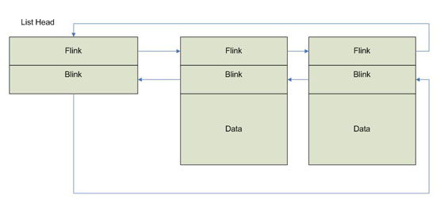
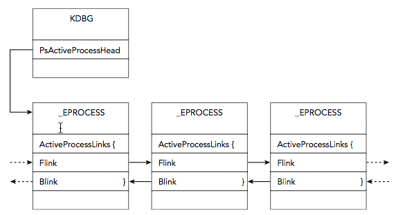
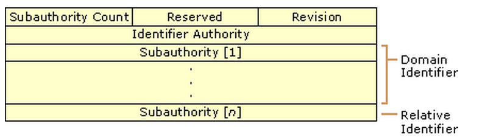
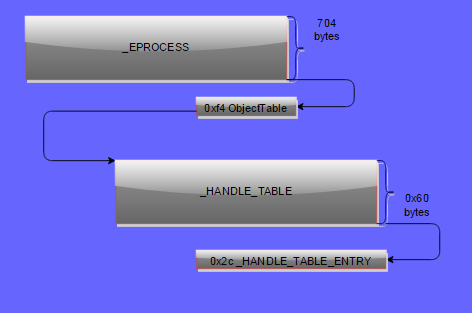

Processes, Handles and Tokens
Presenter Notes
What
What processes are “normal” in Windows.
What an application has access to.
Security Contexts/Privilege Levels
Hidden Processes
Evasive Techniques
Presenter Notes
Process / Thread
A process is a running program with a set of resources.
- Process ID
- Security Context
- At least 1 thread
- Table of handles
- Private virtual address space
A thread is an entity within a process that is scheduled for execution.
All processes have at least 1 thread.
- CPU Registers/State of registers
- Thread ID
Presenter Notes
Threads
A small sequence of programmed instructions
Can be managed independently by a scheduler
Executes within a process
Share data with other threads in the process
A process's threads shares its context
Also shares memory
Takes advantage of multiple cores in the processor
Can run on a single core processor
Handles
Reference to a windows object.
Stored in a table for easy lookup.
Presenter Notes
Privilege Separation
Protection rings separate user and kernel and is enforced at a hardware level.
Ring 0 = Kernel
Ring 3 = User
Uses system calls and interrupts to switch between rings
- NT < XP: Ntdll.dll taps into ring 0 with software interrupt 'Int 0x2e'
- New system call dispatcher is sysenter
- Eax = ordinal value of system call
- Edx = Argument array of system call with return address
- DIsables interrupts and switches thread to Kernel Mode

Presenter Notes
_EPROCESS
Each process contains an executive EPROCESS data structure.
Exists in Kernel space.
Points to several lists
- Handle Table
- Security Identifiers
- Loaded Modules
- Threads
- Virtual Address Descriptors
Kernel equivalent of the PEB in user space.
Presenter Notes
_EPROCESS in Memory
>>> dt ("_EPROCESS")
'_EPROCESS' (704 bytes)
0x0 : Pcb ['_KPROCESS']
0x98 : ProcessLock ['_EX_PUSH_LOCK']
0xa0 : CreateTime ['WinTimeStamp', {'is_utc': True}]
0xa8 : ExitTime ['WinTimeStamp', {'is_utc': True}]
0xb0 : RundownProtect ['_EX_RUNDOWN_REF']
0xb4 : UniqueProcessId ['unsigned int']
0xb8 : ActiveProcessLinks ['_LIST_ENTRY']
0xc0 : ProcessQuotaUsage ['array', 2, ['unsigned long']]
0x13c : Win32WindowStation ['pointer', ['void']] #Clipboard and desktop objects
0x198 : ActiveThreads ['unsigned long']
0x1a8 : Peb ['pointer', ['_PEB']]
0x278 : VadRoot ['_MM_AVL_TABLE']
Presenter Notes
What is important in that huge structure?
PCB: _KPROCESS structure. (Process Control Block)
- Contains critical fields such as the DirectoryTableBase (DTB) for address translation.
Create time, Exit Time
PID (Unique)
ActiveProcessLinks
- doubly linked list of processes
Parent PID
Session
ImageFileName
ThreadList
VadRoot
Processes memory segments
Process Environment Block
- More in malware discussion.
- Dll lists, env variables
Presenter Notes
_KPROCESS
Used by the Kernel to track a process.
Related to scheduling and book-keeping of the process.
_EPROCESS is Executive Subsystem object that holds the _KPROCESS block.
Just a lower level view of the process than _EPROCESS.
What ImageInfo uses to discover what operating system profile to output
Presenter Notes
'_KPROCESS' (152 bytes)
0x0 : Header ['_DISPATCHER_HEADER']
0x18 : DirectoryTableBase ['unsigned long']
0x1c : LdtDescriptor ['_KGDTENTRY']
0x24 : Int21Descriptor ['_KIDTENTRY']
0x2c : ThreadListHead ['_LIST_ENTRY']
0x34 : ProcessLock ['unsigned long']
0x38 : Affinity ['_KAFFINITY_EX']
0x44 : ReadyListHead ['_LIST_ENTRY']
0x4c : SwapListEntry ['_SINGLE_LIST_ENTRY']
0x50 : ActiveProcessors ['_KAFFINITY_EX']
0x74 : StackCount ['_KSTACK_COUNT']
0x78 : ProcessListEntry ['_LIST_ENTRY']
0x80 : CycleTime ['unsigned long long']
0x88 : KernelTime ['unsigned long']
0x8c : UserTime ['unsigned long']
Presenter Notes
Active Process Links
Doubly linked list of processes in a _LIST_ENTRY struct contained within other structs such as _EPROCESS.
_LIST_ENTRY is common in Windows and is also used for loaded modules in the PEB.
Contains a forward, Flink, and a back pointer, Blink, to entries.

Presenter Notes
Linked List of Processes

Presenter Notes
Normal Windows System
What is abnormal?
Presenter Notes
Tools
Task Manager – Windows native
Pslist – Sysinternals, volatility
Procexp – Sysinternals
Process Hacker
Several API calls walk lists
- NtQuerySystemInformation
- CreateToolSnapshot
Presenter Notes
System and Idle
Created by Ntoskrnl.exe
System
PPID: None
PID: 4
Creates session manager process, smss.exe.
Starts at boot and is what Volshell context switches into by default.
Holds kernel-mode threads and drivers.
Uses PsCreateSystemThread to create system threads from kernel mode.
Idle
container for CPU.
PID: 0
Presenter Notes
Session Manger (SSMS)
Created by System
PPID: 4/System
Location: %SYSTEMROOT%\System32
First user mode process
Creates crss and winlogon and then exits.
Creates sessions that isolate OS services.
One is always running as one exits after creating its children.
Presenter Notes
Client/Server Runtime Subsystem (CSRSS)
Creates and deletes processes/Threads, temp files, etc.
Created by SSMS
Location: %SYSTEMROOT%\System32
Multiple run. One per session.
Malware often names itself after csrss to blend in.
- Csrsss.exe, Cssrs.exe.. etc.
Windows < 7 = cmd.exe broker
Presenter Notes
Winlogon
Interactive login prompt
Screen saver
Started by SSMS, so no PID as SSMS exits.
Secure Attention Sequences (Ctrl+Alt+Del)
Location: %SYSTEMROOT%\System32
Presenter Notes
Wininit
Parent: None as smss.exe creates it which exits.
Marks itself critical so that if it exits prematurely and the system is booted in debugging mode, it will break into the debugger (if not, the system will crash).
Location: %SystemRoot%\system32\wininit.exe
Performs user-mode initalization tasks and starts user-mode scheduling.
Creates %windir%\temp
Starts Lsass.exe, Lsm.exe and Services.exe
Presenter Notes
Services Control Manager (Services.exe)
Manages Windows services
Parent of any svchost process, dllhost, taskhost.
One copy
Location: %SYSTEMROOT%\System32
Created by WININET
Services defined in HKLM\SYSTEM\CurrentControlSet\Services
Whole lecture on these later
Presenter Notes
Lsass
The Stuxnet service
Child of Wininit.exe
Only one on the system!
Manages local security policy. manages users allowed to login, password policies, security event logs, etc.
Targeted by malware to dump passwords!
Should not have any children
Presenter Notes
Several More
Resources: https://sysforensics.org/2014/01/know-your-windows-processes.html
Know important Windows services and what is normal before trying to find the abnormal.
Presenter Notes
Volatility to Track Processes, Security Context and Handles
Presenter Notes
PsActiveProcessHead
Symbol that points to doubly-linked list of _EPROCESS objects.
Inactive processes remain active in list if another process has an open handle to it.
A process with 0 threads and an ExitTime can still appear in list, although it has terminated.
Process is removed from list when PspProcessDelete it called
Each process has ActiveProcessList
>>> dt("_EPROCESS")
'_EPROCESS' (704 bytes)
0xb8 : ActiveProcessLinks ['_LIST_ENTRY']
The main PsActiveProcessHead is in the Kernel Processor Control Region (KPCR).
Presenter Notes
Kernel Processor Control Region (KPCR)
Structure where kernel stores per-processor information and is viewable from a debugger.
It is located from the FS register from Windows <= Vista.
- It is now randomized with ASLR.
Contains the contents of CR3.
Recall the _KDDEBUGGER_DATA64 structure from week 1-02.
Magic = KDBG
Presenter Notes
kpcrscan
Scans for potential KPCR structures
Imageinfo also shows the location of the KDBG and KPCR.
Uses a signature to location the _KPCR struct and ensures the _KPCR.Self points to itself.
SLOW SLOW SLOW SLOW
[root&windows]#volatility -f Win7.bin --profile=Win7SP0x86 kpcrscan
Volatility Foundation Volatility Framework 2.4
**************************************************
Offset (V) : 0x8292ec00
Offset (P) : 0x292ec00
KdVersionBlock : 0x8292dc00
IDT : 0x80b95400
GDT : 0x80b95000
CurrentThread : 0x8516c030 TID 624 (svchost.exe:1204)
IdleThread : 0x82938380 TID 0 (Idle:0)
Details : CPU 0 (GenuineIntel @ 3191 MHz)
CR3/DTB : 0x185000
[root&windows]#volatility -f Win7.bin --profile=Win7SP0x86 imageinfo
---CUT---
KDBG : 0x8292dc28L
KPCR for CPU 0 : 0x8292ec00L
---CUT---
Presenter Notes
KPCR
>>> dt("_KPCR")
'_KPCR' (14152 bytes)
0x0 : NtTib ['_NT_TIB']
0x0 : Used_ExceptionList ['pointer', ['_EXCEPTION_REGISTRATION_RECORD']]
0x4 : Used_StackBase ['pointer', ['void']]
0x8 : Spare2 ['pointer', ['void']]
0xc : TssCopy ['pointer', ['void']]
0x10 : ContextSwitches ['unsigned long']
0x14 : SetMemberCopy ['unsigned long']
0x18 : Used_Self ['pointer', ['void']]
0x1c : SelfPcr ['pointer', ['_KPCR']]
0x20 : Prcb ['pointer', ['_KPRCB']]
0x24 : Irql ['unsigned char']
0x28 : IRR ['unsigned long']
0x2c : IrrActive ['unsigned long']
0x30 : IDR ['unsigned long']
0x34 : KdVersionBlock ['pointer', ['void']]
0x38 : IDT ['pointer', ['array', 256, ['_KIDTENTRY']]]
0x3c : GDT ['pointer', ['array', 128, ['_KGDTENTRY']]]
0x40 : TSS ['pointer', ['_KTSS']]
0x44 : MajorVersion ['unsigned short']
0x46 : MinorVersion ['unsigned short']
0x48 : SetMember ['unsigned long']
0x4c : StallScaleFactor ['unsigned long']
0x50 : SpareUnused ['unsigned char']
0x51 : Number ['unsigned char']
0x52 : Spare0 ['unsigned char']
0x53 : SecondLevelCacheAssociativity ['unsigned char']
0x54 : VdmAlert ['unsigned long']
0x58 : KernelReserved ['array', 14, ['unsigned long']]
0x90 : SecondLevelCacheSize ['unsigned long']
0x94 : HalReserved ['array', 16, ['unsigned long']]
0xd4 : InterruptMode ['unsigned long']
0xd8 : Spare1 ['unsigned char']
0xdc : KernelReserved2 ['array', 17, ['unsigned long']]
0x120 : PrcbData ['_KPRCB']
We really only care about getting to the KDVersionBlock!
Offset 0x34 = KdVersionBlock pointer
Offset 0x78 in KdVersionBlock is &PsActiveProcessHead
Presenter Notes
_KDDEBUGGER_DATA64
Contains the PsActiveProcessHead
Already found this in imageinfo
Easier than the aforementioned method and how Volatility does it
>>> dt("_KDDEBUGGER_DATA64")
'_KDDEBUGGER_DATA64' (832 bytes)
0x0 : Header ['_DBGKD_DEBUG_DATA_HEADER64']
0x18 : KernBase ['unsigned long long']
0x20 : BreakpointWithStatus ['unsigned long long']
0x28 : SavedContext ['unsigned long long']
0x30 : ThCallbackStack ['unsigned short']
0x32 : NextCallback ['unsigned short']
0x34 : FramePointer ['unsigned short']
0x38 : KiCallUserMode ['unsigned long long']
0x40 : KeUserCallbackDispatcher ['unsigned long long']
0x48 : PsLoadedModuleList ['pointer', ['_LIST_ENTRY']]
0x50 : PsActiveProcessHead ['pointer', ['_LIST_ENTRY']]
0x58 : PspCidTable ['pointer', ['pointer', ['_PSP_CID_TABLE']]]
Presenter Notes
kdbg scan
Search for and dump potential KDBG values
[root&windows]#volatility -f Win7.bin --profile=Win7SP0x86 kdbgscan
Volatility Foundation Volatility Framework 2.4
**************************************************
Instantiating KDBG using: Kernel AS Win7SP0x86 (6.1.7600 32bit)
Offset (V) : 0x8292dc28
Offset (P) : 0x292dc28
KDBG owner tag check : True
Profile suggestion (KDBGHeader): Win7SP1x86
Version64 : 0x8292dc00 (Major: 15, Minor: 7601)
Service Pack (CmNtCSDVersion) : 1
Build string (NtBuildLab) : 7601.18205.x86fre.win7sp1_gdr.13
PsActiveProcessHead : 0x82945ba8 (54 processes)
PsLoadedModuleList : 0x8294d4d0 (155 modules)
KernelBase : 0x82804000 (Matches MZ: True)
Major (OptionalHeader) : 6
Minor (OptionalHeader) : 1
KPCR : 0x8292ec00 (CPU 0)
Presenter Notes
Analyzing Process Activity
Pslist
- Walks linked list of processes in ActiveProcessList. Easy to unlink from
Pstree
- Print process list as a tree
Psscan
- Scans for _EPROCESS objects
Psxview
- 7 different enumerations for process objects
Presenter Notes
Pslist/Pstree
PsActiveProcessHead
Shows
- Offset ( virtual address)
- process name
- process ID and the parent process ID
- Number of threads
- Number of handles
- Date/time when the process started and exited
Options - -P gives the physical offset address
Points to the start of a list of _EPROCESS structures
Presenter Notes
Pstree
[root&windows]#volatility -f Win7.bin --profile=Win7SP0x86 pstree
Name Pid PPid Thds Hnds Time
-------------------------------------------------- ------ ------ ------ ------ ----
0x853f7490:csrss.exe 348 340 9 523 2013-10-15 18:45:53 UTC+0000
. 0x8426ad40:conhost.exe 3880 348 0 ------ 2013-10-15 18:49:01 UTC+0000
0x859c2d40:wininit.exe 400 340 3 74 2013-10-15 18:45:53 UTC+0000
. 0x85a2d308:lsass.exe 520 400 7 595 2013-10-15 18:45:53 UTC+0000
. 0x85a315a8:lsm.exe 528 400 10 162 2013-10-15 18:45:53 UTC+0000
. 0x85a1e410:services.exe 504 400 11 218 2013-10-15 18:45:53 UTC+0000
.. 0x8526ad00:svchost.exe 3712 504 9 204 2013-10-15 18:46:43 UTC+0000
.. 0x8538b030:dllhost.exe 1804 504 21 189 2013-10-15 18:45:57 UTC+0000
.. 0x86485030:FXSSVC.exe 3092 504 18 110 2013-10-15 18:46:15 UTC+0000
.. 0x86019b48:spoolsv.exe 1304 504 15 337 2013-10-15 18:45:55 UTC+0000
.. 0x8617ab90:TPAutoConnSvc. 1668 504 11 139 2013-10-15 18:45:57 UTC+0000
... 0x862ba8c8:TPAutoConnect. 2176 1668 6 123 2013-10-15 18:46:00 UTC+0000
Presenter Notes
Virtual Address
Ps* contains virtual address of _EPROCESS structure.
_EPROCESS of Winlogon
Can use it in Volshell to parse information
[root&windows]#volatility -f Win7.bin --profile=Win7SP0x86 pstree | grep cmd.exe
... 0x842424b8:cmd.exe 3912 1504 0 ------ 2013-10-15 18:49:01 UTC+0000
[root&windows]#volatility -f Win7.bin --profile=Win7SP0x86 volshell
>>> dt("_EPROCESS", 0x842424b8)
[_EPROCESS _EPROCESS] @ 0x842424B8
0x0 : Pcb 2216961208
0x98 : ProcessLock 2216961360
0xa0 : CreateTime 2013-10-15 18:49:01 UTC+0000
0xa8 : ExitTime 2013-10-15 18:49:01 UTC+0000
0xb0 : RundownProtect 2216961384
0xb4 : UniqueProcessId 3912
0xb8 : ActiveProcessLinks 2216961392
0xc0 : ProcessQuotaUsage -
0xc8 : ProcessQuotaPeak -
0xd0 : CommitCharge 0
0xd4 : QuotaBlock 2190711296
0xd8 : CpuQuotaBlock 0
0x274 : ExitStatus 0
0x278 : VadRoot 2216961840
Presenter Notes
We obtained the address to Pcb/_KPROCESS from the last entry
[root&windows]#volatility -f Win7.bin --profile=Win7SP0x86 volshell
>>> dt("_KPROCESS", 2216961208)
[CType _KPROCESS] @ 0x842424B8
0x0 : Header 2216961208
0x10 : ProfileListHead 2216961224
0x18 : DirectoryTableBase 1053738560
0x1c : LdtDescriptor 2216961236
0x24 : Int21Descriptor 2216961244
0x2c : ThreadListHead 2216961252
0x34 : ProcessLock 0
0x38 : Affinity 2216961264
0x44 : ReadyListHead 2216961276
0x4c : SwapListEntry 2216961284
0x50 : ActiveProcessors 2216961288
0x6c : Flags 2216961316
0x6d : Unused1 0
0x6e : IopmOffset 8364
0x70 : Unused4 0
0x74 : StackCount 2216961324
0x78 : ProcessListEntry 2216961328
0x80 : CycleTime 20807923
0x88 : KernelTime 0
Presenter Notes
psscan
Enumerates processes
- Uses pool tag scanning
can find processes
- Previously terminated (inactive)
- Hidden processes
- Unlinked by a rootkit
Downside
- rootkits can still hide by overwriting the pool tag values
Presenter Notes
Psxview
Scans for a process by enumerating 7 listings.
Pool-tag scanning
Thread scanning.
- _ETHREAD.ThreadProcess
CRSS handle table
PspCid table
Session processes
Desktop threads
Presenter Notes
Psxview cont
True = Process Found
False = Process not in list.
- Normal for some processes such as system, smss, csrss as they are started before the CSRSS handle table is created.
- Processes before smss are not in session/desktop listing
- Use –apply-rules to get an “Okay” if false.
[root&windows]#volatility -f Win7.bin --profile=Win7SP0x86 psxview --apply-rules
Offset(P) Name PID pslist psscan thrdproc pspcid csrss session deskthrd ExitTime
---------- -------------------- ------ ------ ------ -------- ------ ----- ------- -------- --------
0x3ec6ad00 svchost.exe 3712 True True True True True True False
0x3df3ad40 msdtc.exe 1980 True True True True True True True
0x3e42d308 lsass.exe 520 True True True True True True False
0x3da80530 calc.exe 3032 True True True True True True True
0x3df7ab90 TPAutoConnSvc. 1668 True True True True True True True
0x3dcba248 conhost.exe 2184 True True True True True True True
0x3e0f03c8 svchost.exe 908 True True True True True True True
0x3f435030 msra.exe 3676 True True True True True True True
0x3e7c2030 csrss.exe 412 True True True True Okay True True
Presenter Notes
Direct Kernel Object Manipulation (DKOM)
If an attack gets access to system and can write into kernel objects, they can hide information from certain lists.
Kernel Drivers have unrestricted access to kernel memory.
\Device\PhysicalMemory in XP
ZwSystemDebugControl winAPI function to access kernel objects if SeDebugPrivilege is set on a process.
Presenter Notes
DKOM Uses
Hide Processes, files, network connections
Adjust Privileges
Add groups to tokens
Manipulate event view
Hide Ports
Default Kernel mode IDS/IPS/AV
TLDR
Anything in a Kernel list can be manipulated with DKOM if careful (VADs are HARD to DKOM).
Install Kernel driver onto system and control it from user land.
Presenter Notes
DKOM sample
itemTOHide = (PLIST_ENTRY)((PUCHAR)toHide + hardcodeaddress);
*((PDWORD)itemTOHide->Blink) = (DWORD)itemTOHide->Flink;
*((PDWORD)(itemTOHide->Flink) + 1) = (DWORD)itemTOHide->Blink;
itemTOHide->Blink = (PLIST_ENTRY)&itemTOHide->Flink;
itemTOHide->Flink = (PLIST_ENTRY)&itemTOHide->Flink;
Simple forward/back link swap! Easy!
Need to get a driver installed or a kernel module loaded though...
Presenter Notes
Security
Presenter Notes
Security Context
Security Identifies (SIDs) determine the privileges a user or group has.
Tokens are used by a process to store SID values for users/groups.
Tokens are the underlying object that describe security context
Several API functions to control security context
- AdjustTokenPrivileges, GetTokenInformation, SetThreadToken
Presenter Notes
SID

S-1-5-21-2753350090-3269873950-3447048925-1000
S = Prefix for SID
1 = Revision Level (NT = 1)
5 = Highest level of authority that can issue SID.NT Authority. 21-2753350090-3269873950-3447048925 = Local computer/domain Identifier
1000 = Relative Identifier. 1000> = OS didn't create by default. https://msdn.microsoft.com/en-us/library/windows/desktop/aa379649(v=vs.85).aspx
Presenter Notes
SID In Registry
HKEY_USERS\SID*
HKEY_USERS\SID\Volatile Environment\Username
All over the place...
The SID from HKEY_USERS is what gets put in HKEY_CURRENT_USER for a logged in account

Presenter Notes
Many Structs & API
_TOKEN
- Describes security context of a process or thread. _SID
_LUID
- Locally Unique Identifier unique to a system
- … too many.
OpenProcessToken → GetTokenInformation
Also, procexplorer from SysInternals
Presenter Notes

Presenter Notes
Getsids
Volatility plugin to get the SIDs associated with a process.
- -p PID
- -n NAME (uses regex)
-
-o offset for hidden process from psxview
!bash [root&windows]#volatility -f Win7.bin --profile=Win7SP0x86 getsids -n cmd cmd.exe (3912): S-1-5-18 (Local System) cmd.exe (3912): S-1-5-32-544 (Administrators) cmd.exe (3912): S-1-1-0 (Everyone) cmd.exe (3912): S-1-5-11 (Authenticated Users) cmd.exe (3912): S-1-16-16384 (System Mandatory Level)
Presenter Notes
Tokens
Tokens contain information on what privileges they have.
Privileges = Permission to perform a specific task.
All processes contain tokens.
The Local Security Policy dictates what privileges can be enabled.
Presenter Notes
Privileges
A privilege can be present but not enabled.
Processes can inheritance privileges
Privileges can be enabled by default
SeDebug= Read/Write into other processes. Malware LOVES this one.
SeLoadDriver = Load/unload Kernel drivers.
Can use DKOM methods to trick kernel into enabling all privileges and hiding information from user mode.
Presenter Notes
Privs
Volatility plugin to list present and enabled privileges on a per process basis.
- -p flag for specific PID.
- -n NAME (uses regex)
- -s suppress results that were enabled by default
- -o offset for hidden process from psxview
[root&windows]#volatility -f Win7.bin --profile=Win7SP0x86 privs -n cmd
Pid Process Value Privilege Attributes Description
-------- ---------------- ------ ------------------------------------ ------------------------ -----------
3912 cmd.exe 2 SeCreateTokenPrivilege Create a token object
3912 cmd.exe 3 SeAssignPrimaryTokenPrivilege Present Replace a process-level token
3912 cmd.exe 4 SeLockMemoryPrivilege Present,Enabled,Default Lock pages in memory
3912 cmd.exe 5 SeIncreaseQuotaPrivilege Present Increase quotas
3912 cmd.exe 6 SeMachineAccountPrivilege Add workstations to the domain
3912 cmd.exe 7 SeTcbPrivilege Present,Enabled,Default Act as part of the operating system
3912 cmd.exe 8 SeSecurityPrivilege Present Manage auditing and security log
3912 cmd.exe 9 SeTakeOwnershipPrivilege Present Take ownership of files/objects
3912 cmd.exe 10 SeLoadDriverPrivilege Present Load and unload device drivers
3912 cmd.exe 11 SeSystemProfilePrivilege Present,Enabled,Default Profile system performance
3912 cmd.exe 12 SeSystemtimePrivilege Present Change the system time
3912 cmd.exe 13 SeProfileSingleProcessPrivilege Present,Enabled,Default Profile a single process
3912 cmd.exe 14 SeIncreaseBasePriorityPrivilege Present,Enabled,Default Increase scheduling priority
3912 cmd.exe 15 SeCreatePagefilePrivilege Present,Enabled,Default Create a pagefile
3912 cmd.exe 16 SeCreatePermanentPrivilege Present,Enabled,Default Create permanent shared objects
3912 cmd.exe 17 SeBackupPrivilege Present Backup files and directories
3912 cmd.exe 18 SeRestorePrivilege Present Restore files and directories
3912 cmd.exe 19 SeShutdownPrivilege Present Shut down the system
3912 cmd.exe 20 SeDebugPrivilege Present,Default Debug programs
3912 cmd.exe 21 SeAuditPrivilege Present,Enabled,Default Generate security audits
3912 cmd.exe 22 SeSystemEnvironmentPrivilege Present Edit firmware environment values
3912 cmd.exe 23 SeChangeNotifyPrivilege Present,Enabled,Default Receive notifications of changes to files or directories
3912 cmd.exe 24 SeRemoteShutdownPrivilege Force shutdown from a remote system
3912 cmd.exe 25 SeUndockPrivilege Present Remove computer from docking station
3912 cmd.exe 26 SeSyncAgentPrivilege Synch directory service data
3912 cmd.exe 27 SeEnableDelegationPrivilege Enable user accounts to be trusted for delegation
3912 cmd.exe 28 SeManageVolumePrivilege Present Manage the files on a volume
3912 cmd.exe 29 SeImpersonatePrivilege Present,Enabled,Default Impersonate a client after authentication
3912 cmd.exe 30 SeCreateGlobalPrivilege Present,Enabled,Default Create global objects
3912 cmd.exe 31 SeTrustedCredManAccessPrivilege Access Credential Manager as a trusted caller
3912 cmd.exe 32 SeRelabelPrivilege Modify the mandatory integrity level of an object
3912 cmd.exe 33 SeIncreaseWorkingSetPrivilege Present,Enabled,Default Allocate more memory for user applications
3912 cmd.exe 34 SeTimeZonePrivilege Present,Enabled,Default Adjust the time zone of the computer's internal clock
3912 cmd.exe 35 SeCreateSymbolicLinkPrivilege Present,Enabled,Default Required to create a symbolic link
Presenter Notes
Use privs with a goal in mind!
[root&windows]#volatility -f Win7.bin --profile=Win7SP0x86 privs -s | grep SeDebug
1108 ProcessHacker. 20 SeDebugPrivilege Present,Enabled Debug programs
Presenter Notes
Explorer.exe
Common target for attackers as it is white-listed for automatic elevation to administrator.
Enabled privileges could indicate malicious activity.
Handles
Reference to an open instance of a kernel object
Includes files, registry keys, mutexes, named pipes, events, window stations, desktops, threads, and all other types of securable executive objects.
Recall the executive creates several objects based on API call. CreateFile → _FILE_OBJECT
Presenter Notes
System has handle table of Kernel resources
._EPROCESS.ObjectTable has handle table
Indexes contain _HANDLE_TABLE_ENTRY structs in yet another _LIST_ENTRY list
_HANDLE_TABLE_ENTRY point to an Object member which contain the _OBJECT_HEADER of the object.
_EPROCESS.ObjectTable → _Handle_Table.TableCode → _HANDLE_TABLE_ENTRY → _OBJECT_HEADER

Presenter Notes
Handles
Volatility plugin to display all open handles.
-p for process
-o for physical offset to _EPROCESS
-t objectType (comma-serparated)
--silent = surpress unamed objects
ProcessHacker = PID 1108 had SeDebugPriv added
[root&windows]#volatility -f Win7.bin --profile=Win7SP0x86 handles -p 1108
Offset(V) Pid Handle Access Type Details
---------- ------ ---------- ---------- -------------------------- -------
0x8bbd6458 1108 0x4 0x3 Directory KnownDlls
0x86450cd0 1108 0x8 0x100020 File \Device\HarddiskVolume1\Users\Daniel\Desktop\processhacker-2.31-bin\x86
0x85a09eb8 1108 0xc 0x100020 File \Device\HarddiskVolume1\Windows\winsxs\x86_microsoft.windows.common-controls_6595b64144ccf1df_6.0.7601.17514_none_41e6975e2bd6f2b2
0x933b8310 1108 0x10 0x20019 Key MACHINE\SYSTEM\CONTROLSET001\CONTROL\NLS\SORTING\VERSIONS
0x8650e500 1108 0x14 0x1f0001 ALPC Port
0x85f36770 1108 0x18 0x804 EtwRegistration
0x84408988 1108 0x38c 0x1fffff Thread TID 852 PID 1108
0x86452d40 1108 0x290 0x1400 Process StikyNot.exe(2972)
0x862f63a0 1108 0x294 0x1400 Process mstsc.exe(2704)
0x863f63b8 1108 0x298 0x1400 Process devenv.exe(2876)
0x86480530 1108 0x29c 0x1400 Process calc.exe(3032)
0x8533ad40 1108 0x2a0 0x1400 Process WFS.exe(3056)
0x86485030 1108 0x2a4 0x1400 Process FXSSVC.exe(3092)
0x86499d40 1108 0x2a8 0x1400 Process mspaint.exe(3196)
0x864ada20 1108 0x2ac 0x1400 Process svchost.exe(3232)
0x864b5d40 1108 0x2b0 0x1400 Process SnippingTool.e(3276)
0x86487d40 1108 0x2b4 0x1400 Process wisptis.exe(3364)
0x85358d40 1108 0x2b8 0x1400 Process mobsync.exe(3444)
0x86250770 1108 0x2bc 0x1400 Process sidebar.exe(3544)
0x84a35030 1108 0x2c0 0x1400 Process msra.exe(3676)
0x8526ad00 1108 0x2c4 0x1400 Process svchost.exe(3712)
0x861abd40 1108 0x2c8 0x1400 Process svchost.exe(3744)
0x863a20f0 1108 0x110 0x1f0001 Mutant ProcessHacker2Mutant
Presenter Notes
ProcessHacker opened a handle to processes running on the system.
It also created a mutant, ProcessHacker2Mutant! EASY flag for a scan!
Concurrency
Address Space
- All threads in the same process can access the processes address space
- Enables tight coupling of threads
- No IPC overhead
- 2 threads can access the same structures at the same time
- Race conditions
- Data corruption
Synchronizing techniques - Memory locks - Process/thread preemption
Presenter Notes
Semaphores
Synchronization object
Maintains a count between zero and a specified maximum value
- Decremented each time a thread completes a wait for the semaphore object
- Incremented each time a thread releases the semaphore
- When the count reaches zero, no more threads can successfully wait for the semaphore object state to become signaled
- The state of a semaphore is set to signaled when its count is greater than zero
- Nonsignaled when its count is zero
Semaphore object is useful in controlling a shared resource that can support a limited number of users
Presenter Notes
Semaphore Functions
Semaphore objects control shared resources
- Supports a limited number of users
Limits the number of threads sharing a resource
The wait function blocks execution of the window-creation code
Incremented each time a thread releases the semaphore
Decremented each time a thread completes a wait
When count reaches zero, no more threads can successfully wait
Presenter Notes
Semaphore States
Signaled
State of a semaphore is set to signaled when its count is greater than zero, and nonsignaled when its count is zero
Not Signaled
State is set to nonsignaled when its count is zero No more threads can successfully wait for the semaphore
Presenter Notes
Waiting for a Shared Resourcce
If more than one thread is waiting on a semaphore, a waiting thread is selected
Is not a first-in, first-out (FIFO) order
External events such as kernel-mode states can change the wait order.
Presenter Notes
winAPI
Watch for these when doing analysis
CreateSemaphore
OpenSemaphore
ReleaseSemaphore
CloseHandle
Presenter Notes
Mutex Objects
A mutex is a synchronization object
Whose state is set to signaled when it is Not owned by any thread is set to signaled
Nonsignaled when it is owned
Only one thread at a time can own a mutex object
Useful in coordinating mutually exclusive access to a shared resource
Similar to a semaphore for single thread access
Presenter Notes
Example: to prevent two threads from writing to shared memory at the same time, each thread waits for ownership of a mutex object before executing the code that accesses the memory. After writing to the shared memory, the thread releases the mutex object.
Malware LOVES Mutexes!!!
Mutantscan
Scan physical memory for KMUTANT objects with pool tag scanning
Displays all objects, a LOT
- -s to only show named mutexes
- A start address
- G length to scan from start address
- -W skip unallocated objects
The CID column contains the process ID and thread ID of the mutex owner if one exists.
[root&windows]#volatility -f Win7.bin --profile=Win7SP0x86 mutantscan -s
Offset(P) #Ptr #Hnd Signal Thread CID Name
------------------ -------- -------- ------ ---------- --------- ----
0x000000003dfd45f8 2 1 1 0x00000000 .NET Data Provider for Oracle_Perf_Library_Lock_PID_5e0
0x000000003dfd47e0 2 1 1 0x00000000 .NET Data Provider for SqlServer_Perf_Library_Lock_PID_5e0
0x000000003dfdf758 2 1 1 0x00000000 MSDTC_STATS_EVENT
0x000000003dfe9bf8 5 4 1 0x00000000 TpVcW32ListMutex
0x000000003dfeab88 2 1 1 0x00000000 TP-TMUACCESS
0x000000003dd99f08 2 1 1 0x00000000 WindowsSearchService_EfsRegKeysMutex
0x000000003dda20f0 2 1 1 0x00000000 ProcessHacker2Mutant
Presenter Notes
DllList
Print list of loaded dlls for each process
DllList -h
-o OFFSET, --offset=OFFSET
EPROCESS offset (in hex) in the physical address space
-p PID, --pid=PID Operate on these Process IDs (comma-separated)
-n NAME, --name=NAME Operate on these process names (regex)
ProcessHacker = 1108 0x863cc540
[root&windows]#volatility -f Win7.bin --profile=Win7SP0x86 dlllist -p 1108
Volatility Foundation Volatility Framework 2.4
************************************************************************
ProcessHacker. pid: 1108
Command line : "C:\Users\Daniel\Desktop\processhacker-2.31-bin\x86\ProcessHacker.exe"
Service Pack 1
Base Size LoadCount Path
---------- ---------- ---------- ----
0x01220000 0x125000 0xffff C:\Users\Daniel\Desktop\processhacker-2.31-bin\x86\ProcessHacker.exe
0x775c0000 0x13c000 0xffff C:\Windows\SYSTEM32\ntdll.dll
0x76dc0000 0xd4000 0xffff C:\Windows\system32\kernel32.dll
0x75820000 0x4b000 0xffff C:\Windows\system32\KERNELBASE.dll
0x755c0000 0x29000 0xffff C:\Windows\system32\winsta.dll
0x76f40000 0xac000 0xffff C:\Windows\system32\msvcrt.dll
0x744d0000 0x19e000 0xffff C:\Windows\WinSxS\x86_microsoft.windows.common-controls_6595b64144ccf1df_6.0.7601.17514_none_41e6975e2bd6f2b2\COMCTL32.dll
0x75d10000 0x4e000 0xffff C:\Windows\system32\GDI32.dll
0x77040000 0xc9000 0xffff C:\Windows\system32\USER32.dll
0x75960000 0xa000 0xffff C:\Windows\system32\LPK.dll
0x76ea0000 0x9d000 0xffff C:\Windows\system32\USP10.dll
0x772b0000 0x57000 0xffff C:\Windows\system32\SHLWAPI.dll
0x74b00000 0x9000 0xffff C:\Windows\system32\VERSION.dll
0x75d60000 0x7b000 0xffff C:\Windows\system32\COMDLG32.dll
0x760a0000 0xc4a000 0xffff C:\Windows\system32\SHELL32.dll
0x77750000 0xa0000 0xffff C:\Windows\system32\ADVAPI32.dll
0x77700000 0x19000 0xffff C:\Windows\SYSTEM32\sechost.dll
0x75970000 0xa2000 0xffff C:\Windows\system32\RPCRT4.dll
0x75bb0000 0x15c000 0xffff C:\Windows\system32\ole32.dll
0x774d0000 0x8f000 0xffff C:\Windows\system32\OLEAUT32.dll
0x76080000 0x1f000 0x4 C:\Windows\system32\IMM32.DLL
0x76cf0000 0xcc000 0x2 C:\Windows\system32\MSCTF.dll
0x75550000 0xc000 0x3 C:\Windows\system32\CRYPTBASE.dll
0x74870000 0x40000 0x5 C:\Windows\system32\uxtheme.dll
0x73d10000 0x1d000 0x1 C:\Users\Daniel\Desktop\processhacker-2.31-bin\x86\plugins\DotNetTools.dll
0x72220000 0x19000 0x1 C:\Users\Daniel\Desktop\processhacker-2.31-bin\x86\plugins\ExtendedNotifications.dll
0x75a20000 0x35000 0x10 C:\Windows\system32\WS2_32.dll
0x75fe0000 0x6000 0x1d C:\Windows\system32\NSI.dll
0x72200000 0x1b000 0x1 C:\Users\Daniel\Desktop\processhacker-2.31-bin\x86\plugins\ExtendedServices.dll
0x633c0000 0x2b000 0x1 C:\Users\Daniel\Desktop\processhacker-2.31-bin\x86\plugins\ExtendedTools.dll
0x721e0000 0x14000 0x1 C:\Users\Daniel\Desktop\processhacker-2.31-bin\x86\plugins\NetworkTools.dll
0x633a0000 0x19000 0x1 C:\Users\Daniel\Desktop\processhacker-2.31-bin\x86\plugins\OnlineChecks.dll
0x71b30000 0x58000 0x4 C:\Windows\system32\WINHTTP.dll
0x71ae0000 0x4f000 0x4 C:\Windows\system32\webio.dll
0x63120000 0x17000 0x1 C:\Users\Daniel\Desktop\processhacker-2.31-bin\x86\plugins\SbieSupport.dll
0x63100000 0x20000 0x1 C:\Users\Daniel\Desktop\processhacker-2.31-bin\x86\plugins\ToolStatus.dll
0x73f80000 0x130000 0x3 C:\Windows\system32\WindowsCodecs.dll
0x630e0000 0x19000 0x1 C:\Users\Daniel\Desktop\processhacker-2.31-bin\x86\plugins\Updater.dll
0x630c0000 0x17000 0x1 C:\Users\Daniel\Desktop\processhacker-2.31-bin\x86\plugins\UserNotes.dll
0x630a0000 0x1c000 0x1 C:\Users\Daniel\Desktop\processhacker-2.31-bin\x86\plugins\WindowExplorer.dll
0x77110000 0x19d000 0x1 C:\Windows\system32\setupapi.dll
0x75920000 0x27000 0x3 C:\Windows\system32\CFGMGR32.dll
0x757c0000 0x12000 0x1 C:\Windows\system32\DEVOBJ.dll
0x757f0000 0x2e000 0x1 C:\Windows\system32\WINTRUST.dll
0x756a0000 0x120000 0x1 C:\Windows\system32\CRYPT32.dll
0x75670000 0xc000 0x2 C:\Windows\system32\MSASN1.dll
0x740e0000 0x13000 0x1 C:\Windows\system32\dwmapi.dll
0x75ff0000 0x83000 0x1 C:\Windows\system32\CLBCatQ.DLL
0x71330000 0x5a000 0x1 C:\Windows\System32\netprofm.dll
0x73860000 0x10000 0x1 C:\Windows\System32\nlaapi.dll
0x75080000 0x16000 0x1 C:\Windows\system32\CRYPTSP.dll
0x74e20000 0x3b000 0x1 C:\Windows\system32\rsaenh.dll
0x755f0000 0xe000 0x1 C:\Windows\system32\RpcRtRemote.dll
0x70ba0000 0x8000 0x1 C:\Windows\System32\npmproxy.dll
0x735c0000 0x1c000 0x4 C:\Windows\system32\IPHLPAPI.DLL
0x735b0000 0x7000 0x4 C:\Windows\system32\WINNSI.DLL
0x72110000 0xd000 0x1 C:\Windows\system32\dhcpcsvc6.DLL
0x720f0000 0x12000 0x1 C:\Windows\system32\dhcpcsvc.DLL
0x754e0000 0x1b000 0x2 C:\Windows\system32\SspiCli.dll
0x74d20000 0x8000 0x1 C:\Windows\system32\credssp.dll
0x75040000 0x3c000 0x4 C:\Windows\system32\mswsock.dll
0x71db0000 0x6000 0x1 C:\Windows\System32\wshqos.dll
0x74b90000 0x5000 0x2 C:\Windows\system32\wshtcpip.DLL
0x75030000 0x6000 0x2 C:\Windows\system32\wship6.dll
0x74f00000 0x44000 0x2 C:\Windows\system32\DNSAPI.dll
0x70df0000 0x6000 0x1 C:\Windows\system32\rasadhlp.dll
0x72130000 0x38000 0x1 C:\Windows\System32\fwpuclnt.dll